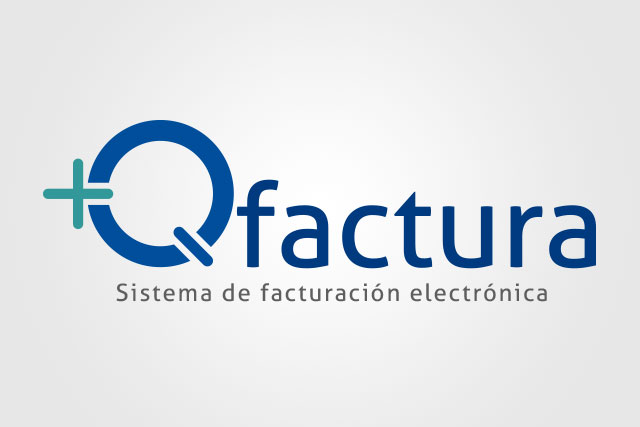

+Qfactura
Sistema de facturacion electronica
Es un sistema de facturación que cumple con todos los requisitos fiscales en México, cuenta con una versión para cada modalidad de facturación vigente, ya sea Facturación Electrónica o Facturación Impresa con Código de Barra Bidimensional.
Es un sistema fácil de usar, con características que facilitan el proceso de facturación en micro y pequeños negocios, ayudándoles a ser más productivos y eficientes en su operación diaria.
Esto le permite llevar diversos controles:
- Te permite manejar varias empresas y mutiples usuarios
- Genera, timbra y envía los CFDI más usados por las empresas
- Realiza Facturas electrónicas,Complementos de Pago (REP), notas de cargo y de crédito, recibos de honorarios y de arrendamiento, carta porte, entre otros.
- Emite tus Recibos Electrónicos de Pago de manera ágil y cumpliendo con todas las e specificaciones que marca el SAT.
- Puedes registrar información de tus clientes para conocerlos mejor y atenderles de manera personalizada
- Tiene complementos fiscales más usadas: notarios, donatarias e instituciones educativas, sin costo adicional
Estamos respaldados con un PAC (Proveedores Autorizados de Certificación) del Servicio de Administración Tributaria (SAT).
Te ayuda a ser más productivo.
Te ayuda a reducir tiempos y a ser más productivo y profesional, gracias a sus características que van más allá de la emisión de CFDI.
- Crear cotizaciones para mejorar tu proceso comercial e incrementar tus ventas
- Copiar documentos para acelerar tus operaciones más frecuentes.
- Tiene una alarma que te avisa sobre la caducidad de tus sellos, evitando que interrumpas tu facturación electrónica.
- Envía las facturas por correo electrónico a tus clientes
Genera reportes que te permiten tomar las mejores decisiones para tu negocio.
Cuenta con reportes que te ayudan a comprender major el desempeño de tu negocio, habilitándote para dirigirlo de la mejor manera y ser más rentable.
- Impresión de documentos de ventas
- Reportes de ventas
- Gráfica de ventas
- Clientes, Estado de cuenta, Estado de cuenta, Resumen de su estado de cuenta, Antigüedad de saldos